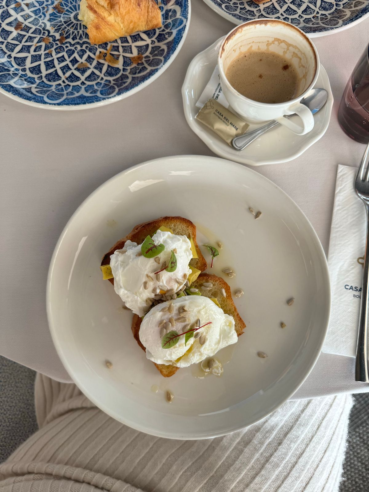
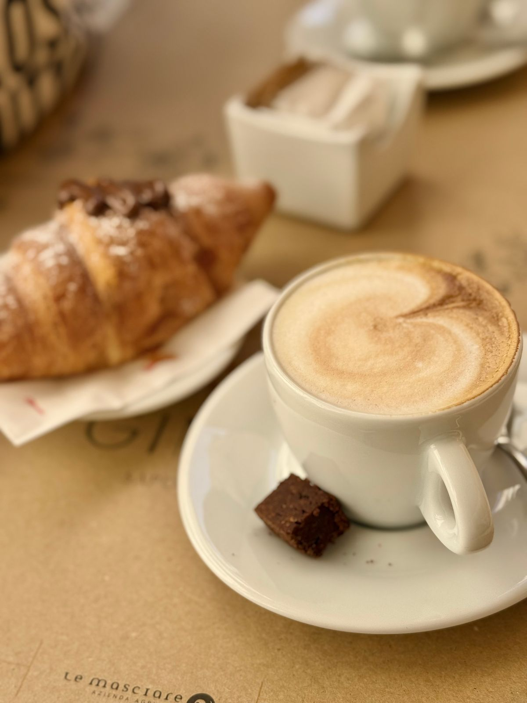
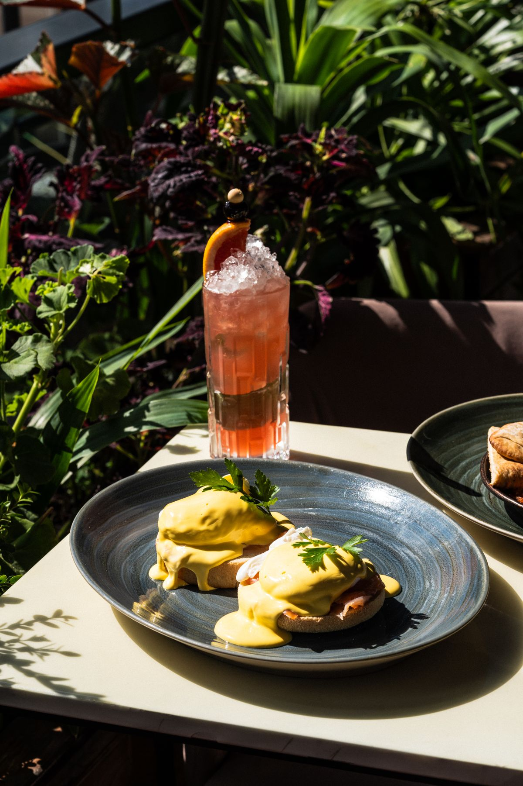

Visit Swiftwater Cafe
A downtown breakfast and lunch cafe and caterer on Capitol Street in Charleston, open since 2003.
Address: 405 Capitol St Suite 105, Charleston, WV 25301
Hours: Monday to Friday 7:00 AM to 2:00 PM. Closed Saturday and Sunday.
Phone: (304) 342-2443
Gallery



All gallery photos are stock photos, labeled as such. They show breakfast plates and coffee, not this cafe's food or dining room.
Contact
Swiftwater Cafe serves Charleston, WV. Questions? Call (304) 342-2443.